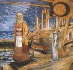

| Artist: | (Guy) Manning |
| Title: | The Ragged Curtain |
| Label: | Cyclops CYCL 115 |
| Length(s): | minutes |
| Year(s) of release: | 2002 |
| Month of review: | [06/2003] |
| 1) | A Ripple (From Ragged Curtains) | 0.40 |
The Mariage Of Heaven And Hell
| 2) | Tightrope | 10.40 |
| 3) | A Place To Hide | 4.56 |
| 4) | Where Do All The Madmen Go? | 6.32 |
| 5) | Stronger | 5.33 |
| 6) | What Is It Worth? | 6.06 |
| 7) | The Weaver Of Dreams | 7.37 |
| 8) | Ragged Curtains | 25.55 |
With A Place To Hide we are back in a loose relaxed mood with acoustic guitar jangling and organ playing. The music is again quite accessible with good vocal melodies and variation and the organ for some subtleties. The sax is present here again, giving the music a relaxed feel as well. Then the guitar comes loose, for a small melodic solo. The music continues to be accessible and appealling. The song ends with some moody cello and we move into...
Where Do All The Madmen Go? On this track, you can hear subtle runs of marimba combined with a reggae style rhythm. The main reference is again Jethro Tull, like in the opening track, but without the flute. The instrumental interlude features long stretched guitar lines, the second interlude has the guitar sound of Oldfield, and is a bit on the overly accessible side, a question and answer game between a guitar on the left and the right (in my ears). The structure is a bit classical here, and light.
Stronger is a singersongwriter style song with a soft bleepy instrumentation. Then the synth strings set in, lightly and a bit dancing. The song stays like that for the main part, with a sax setting in later, softly wailing. What Is It Worth? is vocally repetitive track with a good vocal melody, but not so eventful.
The Weaver Of Dreams is the second track on this album and features quite a bit of mellow flute. It also has some electric guitar, but that is the only excitement we get. For the rest, it is all quite friendly and melodic. The melodies are good though. The guitar work towards the end is also a bit sharper.
Time then for the eight parted Ragged Curtains. I guess the difference with the multi parted Mariage Of Heaven & Hell lies in that these parts could not be separated into eight tracks, because in fact the separate tracks of Mariage... can be heard as such.
Anyway, the song starts of well enough with a good vocal melody, Mannings typical vocals, the following riff dominated part where sax and guitar vie for attention is akin to Van Der Graaf Generator. We are now in the second part, Sea, where the music is rockier and groovier. Strange that all the titles are sea and water related, while the name Ragged Curtains is not. But maybe reading on with the lyrics will help me learn what it means. Acoustic strumming is next on Waves, in folky style with some flute as well. But then the organ is not very Camel at all. The music flows along nicely enough here with synths and keys dominating. Then the rock breaks loose again with the sax playing to accompaniment of the guitar and the organ. Very up-beat and somewhat akin to Pink Floyd. Then it is back to the light flute work. As occurred to me earlier, Manning's vocals seem a bit lispeling, this did not strike me as such on earlier albums. He does have a very British voice, and very recognizable too. Halfway we move into part five, which is quite loud by comparison. Nice playful organ, multiple voices singing in tandem and the guitar going full blast. Right after, Sand is a very folky and light tune. Undertow is a guitar and sax riddled track where the keyboards figure nicely in the back, and the organ brims soothingly. The guitar then starts to wail, in a waltzy fashion, as we arrive at the finale, Ebb. This is one of the best parts on the album, mainly on the strength of the melody and the well written flow of lyrics. The guitar sounds us out, triumphantly.